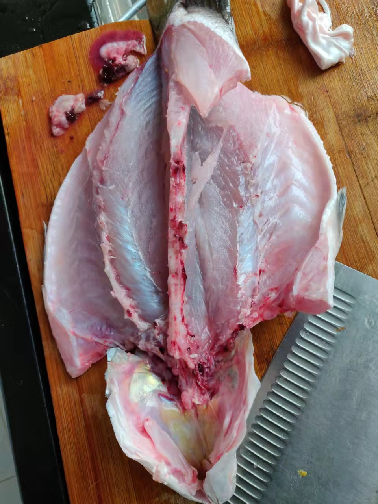

清蒸鲈鱼的做法
预估烹饪难度：★★★
必备原料和工具
- 鲈鱼（害怕杀鱼的同学可以让店家帮忙杀）
- 香葱
- 姜
- 食用油
- 蒸鱼豉油
- 料酒
- 食用盐
计算
每份：
- 鲈鱼 一条
- 香葱 三根
- 姜 一块
- 食用油 10-15ml
- 蒸鱼豉油 10-15ml
- 料酒 10-15ml
- 食用盐 5-10g
操作
- 姜切片切丝、香葱的葱白切段，葱绿切丝，切丝后放入冷水浸泡备用。
- 鲈鱼处理好后洗净，用厨房纸擦干，两面分别划几刀，用盐洗掉鱼身的粘液，并用 10g 盐抹遍鱼身的内外，腌制 10 分钟以上。
- 补充一个鲈鱼改刀和摆盘的方法，改刀后可以让鲈鱼立起来蒸，均匀受热，同时吃起来更加方便，无需翻面。
 
- 鱼肚内塞上姜和葱白，鱼身也撒上姜和葱白，量为备用的一半。蒸鱼的碟子用筷子将鱼跟碟子隔开蒸
- 水烧热感觉到水温后放进入鱼
- 大火清蒸 10 分钟。
- 蒸好的鱼，用干净的盘子装起来并去除身上姜蒜
- 鱼身浇上 15ml 蒸鱼豉油
- 鱼身重新撒上姜和葱丝，锅内加上 10ml 食用油并烧热，将食用油淋至鱼身即可出菜
附加内容
- 技术总结：
- 这道菜属于有手就行，关键点在于火候，鱼的大小跟火候都会相关，太久会导致鱼肉太老极度影响口感，太短会导致部分鱼肉没熟。所以大火蒸鱼一般是 10 分钟内较佳。
- 切记蒸鱼需要用筷子隔开装鱼的盘子，这样做的好处有两点：
- 1、鱼在蒸的过程中会将水滴到盘子，如果鱼直接接触会导致鱼食用时会腥。
- 2、能够将鱼均匀受热。
- 这道菜难度系数简单，而且味道非常棒哦
如果您遵循本指南的制作流程而发现有问题或可以改进的流程，请提出 Issue 或 Pull request 。